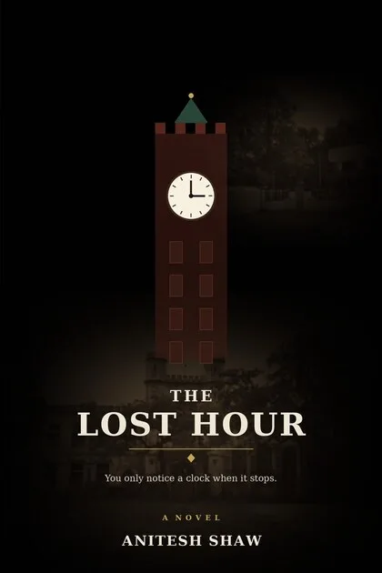

Personal
The creative work I do outside quality engineering. Kept separate from the professional site on purpose.
The Lost Hour
A psychological horror thriller — my debut novel, in progress.

"You only notice a clock when it stops."
Inspired by real experiences from my college years, The Lost Hour explores memory, guilt, and the consequences of bullying — what we bury, what we carry, and what finds its way back. It's a story I've been carrying for two decades, and writing it has been equal parts craft project and reckoning.
Themes
- Memory
- Guilt
- The consequences of bullying
- Inspired by real events
A devotional platform, built from my own practice
Bhaktiverse began as a personal need: a single, quiet place for chants, aartis, mantras, and devotional guidance without the noise of general-purpose platforms. I designed and built it end to end — the website and the Android app — from concept to launch, and it now serves a growing community of devotees.
It's also the project where my professional and personal worlds meet: the same engineering discipline I bring to enterprise quality work, applied to something built purely out of devotion.
The builder behind the architect
My professional site is deliberately focused: quality engineering and agentic AI. But building things — stories, platforms, products for my kids' generation — is what I do everywhere, not just at work. This page holds the creative side: the novel in progress, the devotional platform, and whatever gets built next.